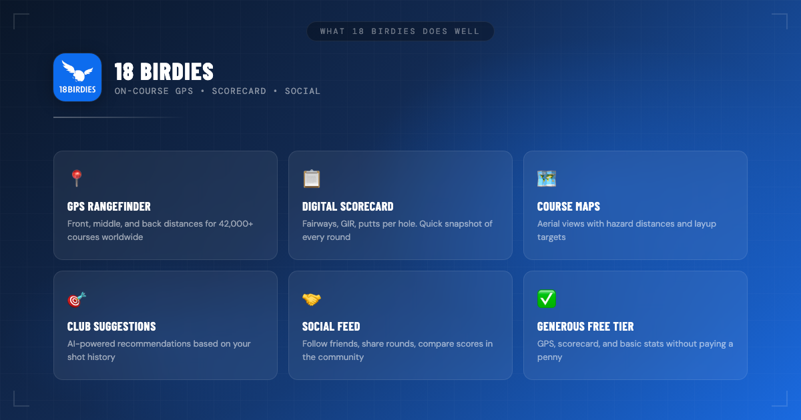
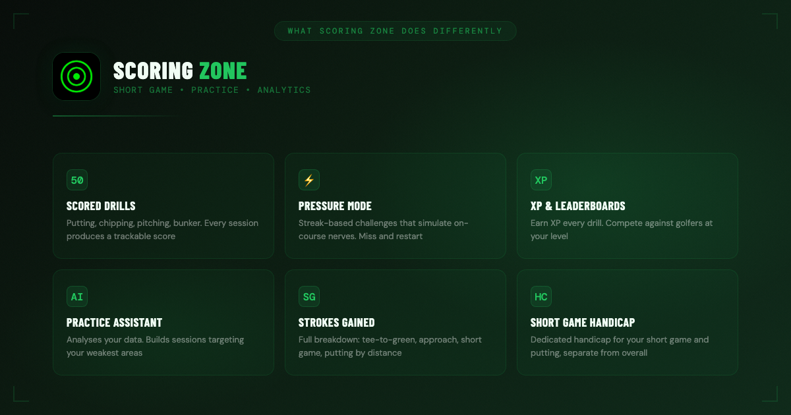
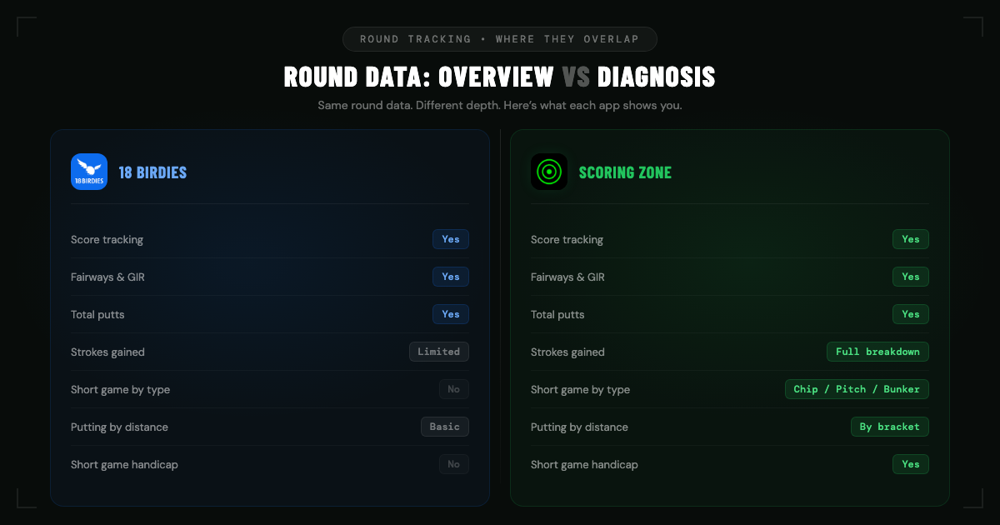
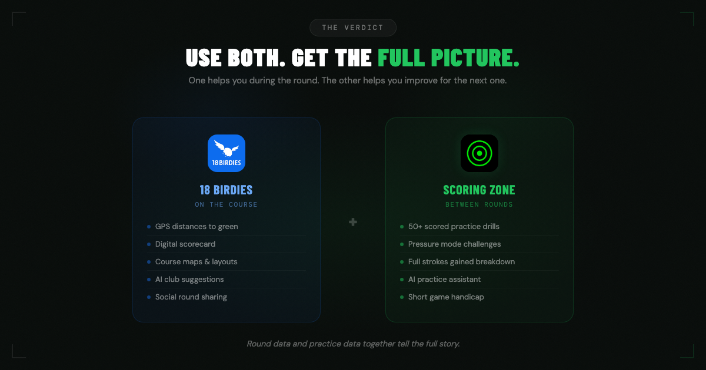

App Comparison

18 Birdies vs Scoring Zone
Which Golf App Do You Actually Need?
April 2, 2026 · 8 min read · Stephen Pickering
Which Golf App Do You Actually Need?
April 2, 2026 · 8 min read · Stephen Pickering
If you’ve searched for golf apps, you’ve probably seen both of these names. 18 Birdies is one of the most popular GPS golf apps on the market. Scoring Zone is built specifically for short game practice and performance analytics. They both help golfers improve — but they solve different problems.
This is not a takedown piece. Both apps are good at what they do. The question isn’t which one is better. It’s which one you need — and whether using both gives you the full picture.

18 Birdies is the number-one rated golf GPS app, and that reputation is earned. It does on-course tools better than almost anything else in the category.
GPS rangefinder: Accurate front, middle, and back distances for over 42,000 courses worldwide. The interface is clean, the data loads fast, and you can trust the numbers when you’re standing in the fairway deciding between a 7 and an 8 iron.
Digital scorecard: Easy to use during a round. Tracks fairways hit, greens in regulation, and total putts. If you want a quick snapshot of how you played, it delivers without getting in the way.
Course maps and hole layouts: Aerial views with layup targets and hazard distances. Useful for playing an unfamiliar course or planning your way around a tight layout.
AI club recommendations: Based on your history, 18 Birdies suggests which club to hit from a given distance. The more rounds you log, the smarter it gets.
Social features: A full social feed where you can follow friends, share rounds, and see how your scores compare. If community motivation matters to you, this is a genuine strength.
Free tier: Generous. GPS, scorecard, and basic stats are available without paying. The premium tier adds more advanced features, but the free version is genuinely useful on its own.
Bottom line: if you need a reliable tool during your round — distances, scorecard, course info — 18 Birdies is one of the best options available.

Scoring Zone isn’t a GPS app. It doesn’t give you yardages on the course. It was built for a different moment in your golf life: the time between rounds. The practice green. The range. The 30 minutes you carve out to actually get better.
50+ scored drills: Putting, chipping, pitching, and bunker drills — all with built-in scoring systems. Every session produces a number you can track over time, so you know whether you’re improving or just going through the motions.
Pressure mode: Streak-based challenges that simulate on-course pressure. Miss and you restart. It’s the difference between rolling putts aimlessly and actually building the nerves you need on the course.
XP and leaderboards: Every drill earns XP. Leaderboards let you compete against other golfers at your level. Gamification sounds like a buzzword until it’s the reason you show up for a Tuesday evening putting session instead of skipping it.
Short game handicap and putting handicap: Scoring Zone’s Performance Hub calculates a dedicated handicap for your short game and putting, separate from your overall handicap. This gives you a number that measures the part of your game where most strokes are actually lost.
Bottom line: if you want structured, scored practice that actually tracks whether your short game is improving, that’s what Scoring Zone was built for.

Both apps track rounds. That’s the one area of real overlap. But they approach it differently, and the depth varies significantly — especially on the short game side.
18 Birdies tracks the essentials: score, fairways hit, greens in regulation, and total putts per hole. The premium tier adds some strokes gained data and shot tracking. It’s a solid overview of your round — enough to see trends in your driving and approach play.
Scoring Zone’s round stats go deeper in the areas where most amateurs actually lose strokes:
Strokes gained by category: A full breakdown across tee-to-green, approach, short game, and putting. Not just a single number — you see exactly which part of your game is costing you.
Approach stats: Proximity to the hole from different distance brackets. You can see whether your 100-yard wedge is tighter than your 150-yard approach and adjust your practice accordingly.
Short game stats by type: Chipping, pitching, bunker play, and wedge distances — broken out separately. Most apps lump these together. Scoring Zone separates them because they’re different skills that need different practice.
Putting stats by distance: Performance broken down by distance bracket — inside 5 feet, 5–10 feet, 10–20 feet, 20+ feet. This tells you whether your problem is short putts, lag putting, or mid-range conversion.
Performance Hub: Generates your short game handicap and putting handicap from your round data, and uses elite mode strokes gained analysis to benchmark you against tour averages.
18 Birdies gives you a good overview. Scoring Zone gives you the diagnosis — specifically for the short game, which is where the majority of scoring improvement lives for most golfers.
See how Scoring Zone breaks down your round data into actionable short game insights.
Round Stats →| Feature | Scoring Zone | 18 Birdies |
|---|---|---|
| GPS Rangefinder | No | Yes |
| Course Maps | No | Yes (42,000+) |
| Round Tracking | Yes | Yes |
| Strokes Gained Analysis | Yes (full breakdown) | Limited |
| Short Game Stats by Type | Yes (chipping, pitching, bunker, wedges) | No |
| Putting Stats by Distance | Yes | Basic |
| Short Game Handicap | Yes | No |
| Putting Handicap | Yes | No |
| 50+ Scored Practice Drills | Yes | No |
| Pressure Mode | Yes | No |
| XP & Leaderboards | Yes | No |
| Club Recommendations | No | Yes (AI-powered) |
| Social Features | Leaderboards | Full social feed |
| Free Tier | Yes (early access) | Yes (generous) |
The table makes the distinction clear. These apps don’t really compete — they cover different ground. 18 Birdies dominates the on-course experience. Scoring Zone dominates the practice and analytics side.

Your main need is GPS distances and a digital scorecard during the round. You want course maps, hole layouts, and club suggestions while you play. You want a social feed to share rounds with friends. 18 Birdies handles all of this and does it well — especially on the free tier.
You want structured practice that’s scored, tracked, and targeted to your weaknesses. You want to know your short game handicap and putting handicap. You want strokes gained data broken down by category — not just a top-level number.
You want the full picture. 18 Birdies on the course for GPS, yardages, and scoring. Scoring Zone between rounds for practice sessions, deep short game analytics, and a clear view of where your strokes are actually going. One helps you during the round. The other helps you improve for the next one.
That’s not a marketing line — it’s how most serious golfers end up using their tools. The round data and the practice data together tell a story that neither app tells alone.
Yes, for on-course use. 18 Birdies is the top-rated golf GPS app with accurate rangefinder data, course maps for 42,000+ courses, digital scorecards, and AI-powered club recommendations. The free tier is generous. If you want GPS distances and basic round tracking, it’s one of the best options available.
Scoring Zone is purpose-built for short game practice. It offers 50+ scored putting and chipping drills, pressure mode with streak-based challenges, and a Performance Hub that calculates your short game handicap and putting handicap. No other app offers that depth for practice specifically.
Absolutely. Many golfers use both. 18 Birdies handles GPS distances and course navigation during the round. Scoring Zone handles structured practice between rounds and provides deeper short game analytics after rounds. They solve different problems, so using both gives you the most complete picture of your game.
18 Birdies offers limited strokes gained data in its premium tier. Scoring Zone provides a full strokes gained breakdown by category — tee-to-green, approach, short game, and putting — along with detailed sub-categories like chipping, pitching, bunker play, and putting by distance bracket. If strokes gained analysis is a priority, Scoring Zone goes significantly deeper.
Stephen Pickering
3-handicap golfer with 25 years on the course. Built Scoring Zone to bring structure and pressure to short game practice. Writes about what actually works from the practice green, not the press box.
Scoring Zone breaks down your short game into the numbers that matter — strokes gained, putting handicap, short game handicap, and drill-by-drill progress. One session is all it takes to see the difference.
Download Scoring Zone Free →Full access to all drills, stats, and features. No payment required.
Get Scoring Zone Free →